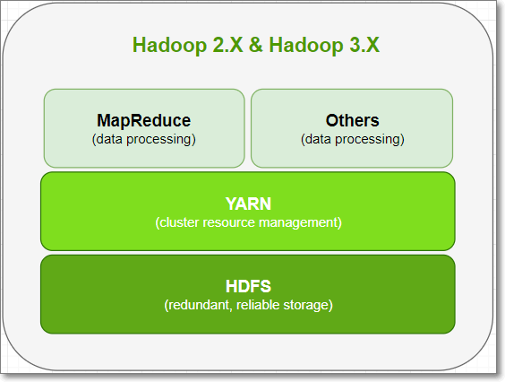
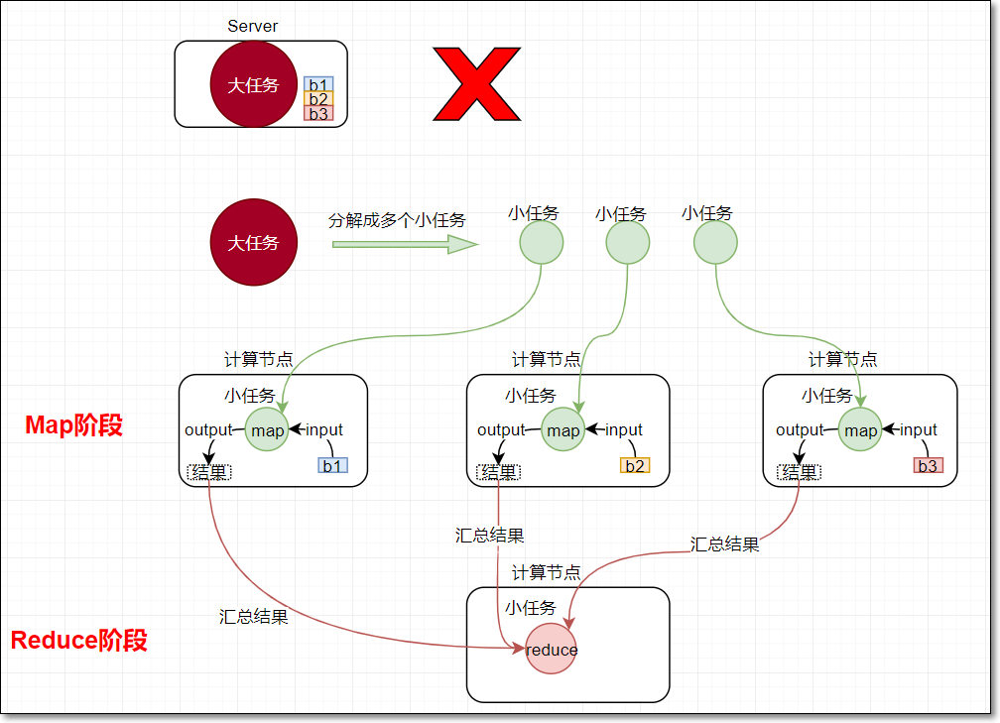
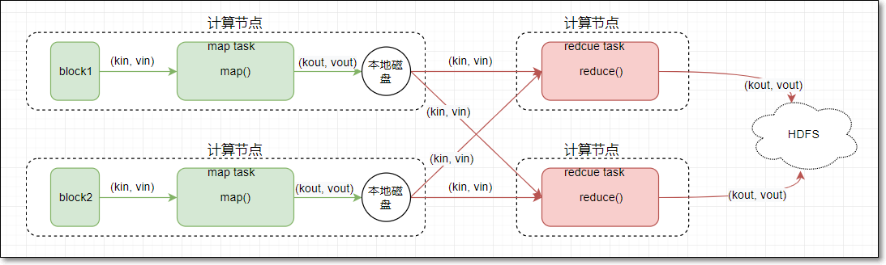
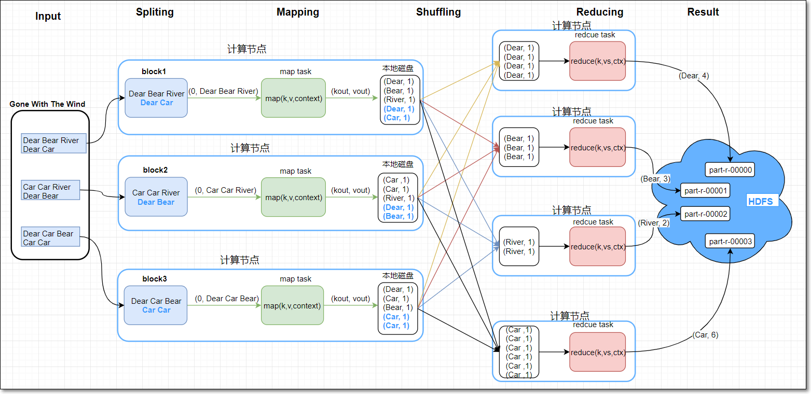
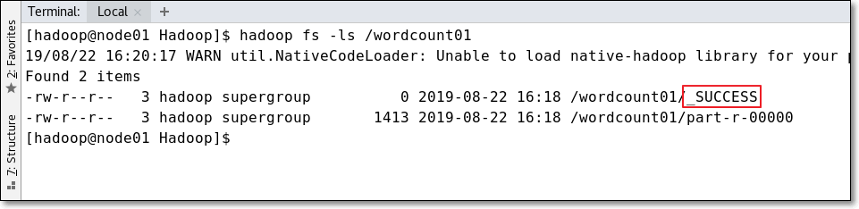
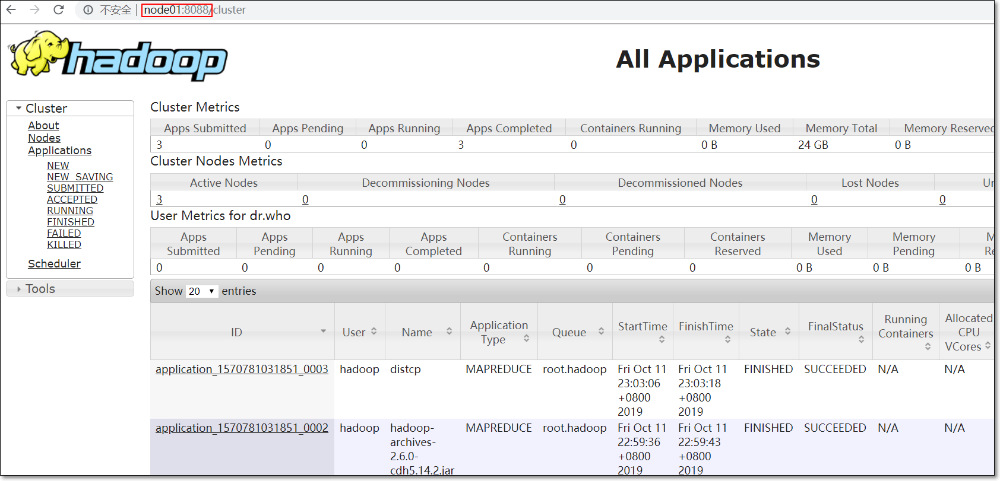
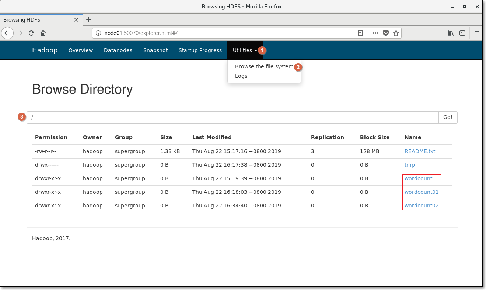
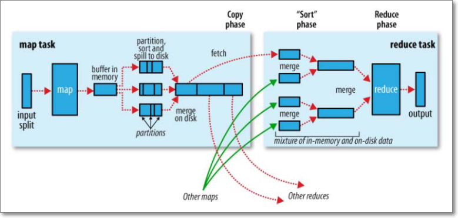
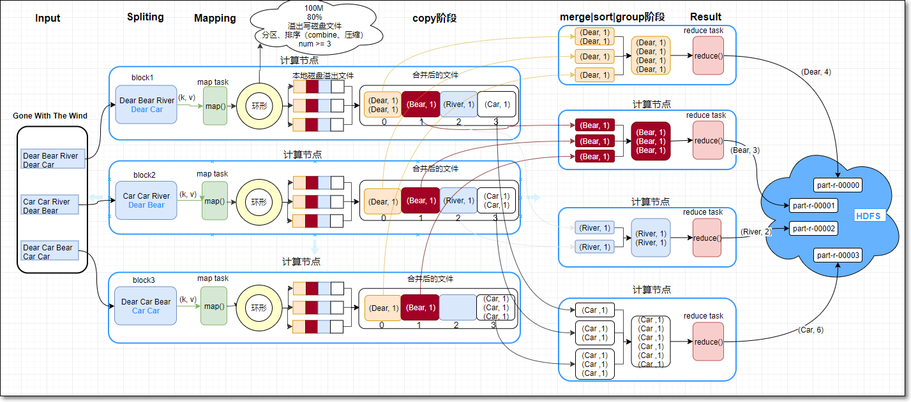

MapReduce编程模型
一、知识要点
1. MapReduce编程模型
Hadoop架构图
Hadoop由HDFS分布式存储、MapReduce分布式计算、Yarn资源调度三部分组成

- MapReduce是采用一种分而治之的思想设计出来的分布式计算框架
- MapReduce由两个阶段组成：
- Map阶段（切分成一个个小的任务）
- Reduce阶段（汇总小任务的结果）
- 那什么是分而治之呢？
- 比如一复杂、计算量大、耗时长的的任务，暂且称为“大任务”；
- 此时使用单台服务器无法计算或较短时间内计算出结果时，可将此大任务切分成一个个小的任务，小任务分别在不同的服务器上并行的执行
- 最终再汇总每个小任务的结果

1.1 Map阶段
- map阶段有一个关键的map()函数；
- 此函数的输入是键值对
- 输出是一系列键值对，输出写入本地磁盘。
1.2 Reduce阶段
reduce阶段有一个关键的函数reduce()函数
此函数的输入也是键值对（即map的输出（kv对））
输出也是一系列键值对，结果最终写入HDFS
1.3 Map&Reduce

2. MapReduce编程示例
- 以MapReduce的词频统计为例：统计一批英文文章当中，每个单词出现的总次数
2.1 MapReduce原理图

- Map阶段
- 假设MR的输入文件“Gone With The Wind”有三个block；block1、block2、block3
- MR编程时，每个block对应一个分片split
- 每一个split对应一个map任务（map task）
- 如图共3个map任务（map1、map2、map3）；这3个任务的逻辑一样，所以以第一个map任务（map1）为例分析
- map1读取block1的数据；一次读取block1的一行数据；
- 产生键值对(key/value)，作为map()的参数传入，调用map()；
- 假设当前所读行是第一行
- 将当前所读行的行首相对于当前block开始处的字节偏移量作为key（0）
- 当前行的内容作为value（Dear Bear River）
- map()内
- (按需求，写业务代码)，将value当前行内容按空格切分，得到三个单词Dear | Bear | River
- 将每个单词变成键值对，输出出去(Dear, 1) | (Bear, 1) | (River, 1)；最终结果写入map任务所在节点的本地磁盘中（内里还有细节，讲到shuffle时，再细细展开）
- block的第一行的数据被处理完后，接着处理第二行；逻辑同上
- 当map任务将当前block中所有的数据全部处理完后，此map任务即运行结束
- 其它的每一个map任务都是如上逻辑，不再赘述
- Reduce阶段
- reduce任务（reduce task）的个数由自己写的程序编程指定，main()内的job.setNumReduceTasks(4)指定reduce任务是4个（reduce1、reduce2、reduce3、reduce4）
- 每一个reduce任务的逻辑一下，所以以第一个reduce任务（reduce1）为例分析
- map1任务完成后，reduce1通过网络，连接到map1，将map1输出结果中属于reduce1的分区的数据，通过网络获取到reduce1端（拷贝阶段）
- 同样也如此连接到map2、map3获取结果
- 最终reduce1端获得4个(Dear, 1)键值对；由于key键相同，它们分到同一组；
- 4个(Dear, 1)键值对，转换成[Dear, Iterable(1, 1, 1, )]，作为两个参数传入reduce()
- 在reduce()内部，计算Dear的总数为4，并将(Dear, 4)作为键值对输出
- 每个reduce任务最终输出文件（内里还有细节，讲到shuffle时，再细细展开），文件写入到HDFS
2.2 MR中key的作用
- MapReduce编程中，key有特殊的作用
①数据中，若要针对某个值进行分组、聚合时，需将此值作为MR中的reduce的输入的key
如当前的词频统计例子，按单词进行分组，每组中对出现次数做聚合（计算总和）；所以需要将每个单词作为reduce输入的key，MapReduce框架自动按照单词分组，进而求出每组即每个单词的总次数

②另外，key还具有可排序的特性，因为MR中的key类需要实现WritableComparable接口；而此接口又继承Comparable接口（可查看源码）
MR编程时，要充分利用以上两点；结合实际业务需求，设置合适的key


2.4 MR参考代码
2.4.1 Mapper代码
1 | package com.kaikeba.hadoop.wordcount; |
2.4.2 Reducer代码
1 | package com.kaikeba.hadoop.wordcount; |
2.4.3 Main程序入口
1 | package com.kaikeba.hadoop.wordcount; |
程序运行有两种方式，分别是windows本地运行、集群运行，依次演示
2.5 集群运行
- 用maven插件打jar包；①点击Maven，②双击package打包
1 | [hadoop@node01 ~]$ hadoop jar com.kaikeba.hadoop-1.0-SNAPSHOT.jar com.kaikeba.hadoop.wordcount.WordCountMain /README.txt /wordcount01 |
说明：
com.kaikeba.hadoop-1.0-SNAPSHOT.jar是jar包名
com.kaikeba.hadoop.wordcount.WordCountMain是包含main方法的类的全限定名
/NOTICE.txt和/wordcount是main方法的两个参数，表示输入路径、输出路径

- 确认结果
1 | [hadoop@node01 ~]$ hadoop fs -ls /wordcount01 |

2.6 总结
- MR分为两个阶段：map阶段、reduce阶段
- MR输入的文件有几个block，就会生成几个map任务
- MR的reduce任务的个数，由程序中编程指定：job.setNumReduceTasks(4)
- map任务
- map任务中map()一次读取block的一行数据，以kv对的形式输入map()
- map()的输出作为reduce()的输入
- reduce任务
- reduce任务通过网络将各执行完成的map任务输出结果中，属于自己的数据取过来
- key相同的键值对作为一组，调用一次reduce()
- reduce任务生成一个结果文件
- 文件写入HDFS
3. WEB UI查看结果
3.1 Yarn
node01是resourcemanager所在节点主机名，根据自己的实际情况修改主机名
浏览器访问url地址：http://node01:8088

3.2 HDFS结果
浏览器输入URL：http://node01:50070
①点击下拉框；②浏览文件系统；③输入根目录，查看hdfs根路径中的内容

4. Shuffle
- shuffle主要指的是map端的输出作为reduce端输入的过程
4.1 shuffle简图

4.2 shuffle细节图

分区用到了分区器，默认分区器是HashPartitioner
源码：
1
2
3
4
5
6
7
8
9
10
11public class HashPartitioner<K2, V2> implements Partitioner<K2, V2> {
public void configure(JobConf job) {}
/** Use {@link Object#hashCode()} to partition. */
public int getPartition(K2 key, V2 value,
int numReduceTasks) {
return (key.hashCode() & Integer.MAX_VALUE) % numReduceTasks;
}
}
4.3 map端
- 每个map任务都有一个对应的环形内存缓冲区；输出是kv对，先写入到环形缓冲区（默认大小100M），当内容占据80%缓冲区空间后，由一个后台线程将缓冲区中的数据溢出写到一个磁盘文件
- 在溢出写的过程中，map任务可以继续向环形缓冲区写入数据；但是若写入速度大于溢出写的速度，最终造成100m占满后，map任务会暂停向环形缓冲区中写数据的过程；只执行溢出写的过程；直到环形缓冲区的数据全部溢出写到磁盘，才恢复向缓冲区写入
- 后台线程溢写磁盘过程，有以下几个步骤：
- 先对每个溢写的kv对做分区；分区的个数由MR程序的reduce任务数决定；默认使用HashPartitioner计算当前kv对属于哪个分区；计算公式：(key.hashCode() & Integer.MAX_VALUE) % numReduceTasks
- 每个分区中，根据kv对的key做内存中排序；
- 若设置了map端本地聚合combiner，则对每个分区中，排好序的数据做combine操作；
- 若设置了对map输出压缩的功能，会对溢写数据压缩
- 随着不断的向环形缓冲区中写入数据，会多次触发溢写（每当环形缓冲区写满100m），本地磁盘最终会生成多个溢出文件
- 合并溢写文件：在map task完成之前，所有溢出文件会被合并成一个大的溢出文件；且是已分区、已排序的输出文件
- 小细节：
- 在合并溢写文件时，如果至少有3个溢写文件，并且设置了map端combine的话，会在合并的过程中触发combine操作；
- 但是若只有2个或1个溢写文件，则不触发combine操作（因为combine操作，本质上是一个reduce，需要启动JVM虚拟机，有一定的开销）
4.4 reduce端
reduce task会在每个map task运行完成后，通过HTTP获得map task输出中，属于自己的分区数据（许多kv对）
如果map输出数据比较小，先保存在reduce的jvm内存中，否则直接写入reduce磁盘
一旦内存缓冲区达到阈值（默认0.66）或map输出数的阈值（默认1000），则触发归并merge，结果写到本地磁盘
若MR编程指定了combine，在归并过程中会执行combine操作
随着溢出写的文件的增多，后台线程会将它们合并大的、排好序的文件
reduce task将所有map task复制完后，将合并磁盘上所有的溢出文件
默认一次合并10个
最后一批合并，部分数据来自内存，部分来自磁盘上的文件
进入“归并、排序、分组阶段”
每组数据调用一次reduce方法
参考文件《reduce端merge 排序 分组.txt》
4.5 总结
- map端
- map()输出结果先写入环形缓冲区
- 缓冲区100M；写满80M后，开始溢出写磁盘文件
- 此过程中，会进行分区、排序、combine（可选）、压缩（可选）
- map任务完成前，会将多个小的溢出文件，合并成一个大的溢出文件（已分区、排序）
- reduce端
- 拷贝阶段：reduce任务通过http将map任务属于自己的分区数据拉取过来
- 开始merge及溢出写磁盘文件
- 所有map任务的分区全部拷贝过来后，进行阶段合并、排序、分组阶段
- 每组数据调用一次reduce()
- 结果写入HDFS